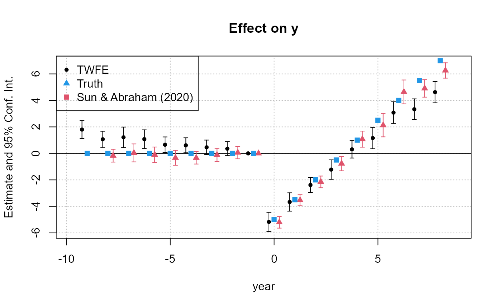

Fast Fixed-Effects Estimation: Short introduction
Laurent Berge
2020-12-23
Source:vignettes/fixest_walkthrough.Rmd
fixest_walkthrough.RmdThe package fixest provides a family of functions to perform estimations with multiple fixed-effects. The two main functions are feols for linear models and feglm for generalized linear models. In addition, the function femlm performs direct maximum likelihood estimation, and feNmlm extends the latter to allow the inclusion of non-linear in parameters right-hand-sides. Each of these functions supports any number of fixed-effects and is implemented with full fledged multi-threading in c++. Functions feols and feglm further support variables with varying slopes.
This package is currently (Feb. 2020) the fastest software available to perform fixed-effects estimations (see the project’s homepage for a benchmarking).
The standard-errors of the estimates can be easily and intuitively clustered (up to four-way).
The function etable allows to seamlessly export the results of multiple estimations into either a data.frame, or into a Latex table.
The main features of the package are illustrated in this vignette. The theory used to obtain the fixed-effects is based on Berge (2018), “Efficient estimation of maximum likelihood models with multiple fixed-effects: the R package FENmlm.” CREA Discussion Papers, 13 (https://wwwen.uni.lu/content/download/110162/1299525/file/2018_13).
Simple example using trade data
This example deals with international trade, which is a setup that usually requires performing estimations with many fixed-effects. We estimate a very simple gravity model in which we are interested in finding out the negative effect of geographic distance on trade. The sample data consists of European trade extracted from Eurostat. Let’s load the data contained in the package:
This data is a sample of bilateral importations between EU15 countries from 2007 and 2016. The data is further broken down according to 20 product categories. Here is a sample of the data:
| Destination | Origin | Product | Year | dist_km | Euros |
|---|---|---|---|---|---|
| LU | BE | 1 | 2007 | 139.5719 | 2966697 |
| BE | LU | 1 | 2007 | 139.5719 | 6755030 |
| LU | BE | 2 | 2007 | 139.5719 | 57078782 |
| BE | LU | 2 | 2007 | 139.5719 | 7117406 |
| LU | BE | 3 | 2007 | 139.5719 | 17379821 |
| BE | LU | 3 | 2007 | 139.5719 | 2622254 |
The dependent variable of the estimation will be the level of trade between two countries while the independent variable is the geographic distance between the two countries. To obtain the elasticity of geographic distance net of the effects of the four fixed-effects, we estimate the following:
\(E\left(Trade_{i,j,p,t}\right)=\gamma_{i}^{Exporter}\times\gamma_{j}^{Importer}\times\gamma_{p}^{Product}\times\gamma_{t}^{Year}\times Distance_{ij}^{\beta}\),
where the subscripts \(i\), \(j\), \(p\) and \(t\) stand respectively for the exporting country, the importing country, the type of product and the year, and the \(\gamma_{v}^{c}\) are fixed-effects for these groups. Here \(\beta\) is the elasticity of interest.
Note that when you use the Poisson/Negative Binomial families, this relationship is in fact linear because the right hand side is exponentialized to avoid negative values for the Poisson parameter. This leads to the equivalent relation:1
\(E\left(Trade_{i,j,p,t}\right)=\exp\left(\gamma_{i}^{Exporter}+\gamma_{j}^{Importer}+\gamma_{p}^{Product}+\gamma_{t}^{Year}+\beta\times \ln Distance_{ij}\right)\).
Estimation
The estimation of this model using a Poisson likelihood is as follows:
The function fepois is actually an alias to the function feglm with family = poisson. The results can be shown directly with the print method:
print(gravity_pois)
#> Poisson estimation, Dep. Var.: Euros
#> Observations: 38,325
#> Fixed-effects: Origin: 15, Destination: 15, Product: 20, Year: 10
#> Standard-errors: Clustered (Origin)
#> Estimate Std. Error z value Pr(>|z|)
#> log(dist_km) -1.5279 0.115678 -13.208 < 2.2e-16 ***
#> ---
#> Signif. codes: 0 '***' 0.001 '**' 0.01 '*' 0.05 '.' 0.1 ' ' 1
#> Log-Likelihood: -7.025e+11 Adj. Pseudo R2: 0.764032
#> BIC: 1.405e+12 Squared Cor.: 0.612021The print reports the coefficient estimates and standard-errors as well as some other information. Among the quality of fit information, the squared-correlation corresponds to the correlation between the dependent variable and the expected predictor; it reflects somehow the idea of R-square in OLS estimations. Note that the estimation is performed using parallel computing which you can control using the argument nthreads (see the “multi-threading” section for more details).
Clustering the standard-errors
To cluster the standard-errors, we can simply use the argument se of the summary method. Let’s say we want to cluster the standard-errors according to the first two fixed-effects (i.e. the Origin and Destination variables). Then we just have to do:
summary(gravity_pois, se = "twoway")
#> Poisson estimation, Dep. Var.: Euros
#> Observations: 38,325
#> Fixed-effects: Origin: 15, Destination: 15, Product: 20, Year: 10
#> Standard-errors: Two-way (Origin & Destination)
#> Estimate Std. Error z value Pr(>|z|)
#> log(dist_km) -1.5279 0.130734 -11.687 < 2.2e-16 ***
#> ---
#> Signif. codes: 0 '***' 0.001 '**' 0.01 '*' 0.05 '.' 0.1 ' ' 1
#> Log-Likelihood: -7.025e+11 Adj. Pseudo R2: 0.764032
#> BIC: 1.405e+12 Squared Cor.: 0.612021The clustering can be done on one (se="cluster"), two (se="twoway"), three (se="threeway") or up to four (se="fourway") variables. If the estimation includes fixed-effects, then by default the clustering will be done using these fixed-effects, in the original order. This is why the Origin and Destination variables were used for the two-way clustering in the previous example. If, instead, you wanted to perform one-way clustering on the Product variable, you need to use the argument cluster:
# Equivalent ways of clustering the SEs:
# One-way clustering is deduced from the arguent 'cluster'
# - using the vector:
summary(gravity_pois, cluster = trade$Product)
# - by reference:
summary(gravity_pois, cluster = "Product")
# - with a formula:
summary(gravity_pois, cluster = ~Product)All produce the same results:
summary(gravity_pois, cluster = ~Product)
#> Poisson estimation, Dep. Var.: Euros
#> Observations: 38,325
#> Fixed-effects: Origin: 15, Destination: 15, Product: 20, Year: 10
#> Standard-errors: Clustered (Product)
#> Estimate Std. Error z value Pr(>|z|)
#> log(dist_km) -1.5279 0.098294 -15.544 < 2.2e-16 ***
#> ---
#> Signif. codes: 0 '***' 0.001 '**' 0.01 '*' 0.05 '.' 0.1 ' ' 1
#> Log-Likelihood: -7.025e+11 Adj. Pseudo R2: 0.764032
#> BIC: 1.405e+12 Squared Cor.: 0.612021Note that you can always cluster the standard-errors, even when the estimation contained no fixed-effect. But then you must use the argument cluster:
gravity_simple = fepois(Euros ~ log(dist_km), trade)
# Two way clustering is deduced from the argument 'cluster'
# Using data:
summary(gravity_simple, cluster = trade[, c("Origin", "Destination")])
#> Poisson estimation, Dep. Var.: Euros
#> Observations: 38,325
#> Standard-errors: Two-way (Origin & Destination)
#> Estimate Std. Error z value Pr(>|z|)
#> (Intercept) 24.709 1.124800 21.9680 < 2.2e-16 ***
#> log(dist_km) -1.029 0.158022 -6.5114 7.44e-11 ***
#> ---
#> Signif. codes: 0 '***' 0.001 '**' 0.01 '*' 0.05 '.' 0.1 ' ' 1
#> Log-Likelihood: -2.426e+12 Adj. Pseudo R2: 0.185023
#> BIC: 4.852e+12 Squared Cor.: 0.055107
# Using a formula (note that the values of the variables are
# fetched directly in the original database):
summary(gravity_simple, cluster = ~Origin + Destination)
#> Poisson estimation, Dep. Var.: Euros
#> Observations: 38,325
#> Standard-errors: Two-way (Origin & Destination)
#> Estimate Std. Error z value Pr(>|z|)
#> (Intercept) 24.709 1.124800 21.9680 < 2.2e-16 ***
#> log(dist_km) -1.029 0.158022 -6.5114 7.44e-11 ***
#> ---
#> Signif. codes: 0 '***' 0.001 '**' 0.01 '*' 0.05 '.' 0.1 ' ' 1
#> Log-Likelihood: -2.426e+12 Adj. Pseudo R2: 0.185023
#> BIC: 4.852e+12 Squared Cor.: 0.055107Finally, the standard-errors can also be computed at estimation time, you simply need to add the se or cluster argument:
fepois(Euros ~ log(dist_km), trade, cluster = ~Product)
#> Poisson estimation, Dep. Var.: Euros
#> Observations: 38,325
#> Standard-errors: Clustered (Product)
#> Estimate Std. Error z value Pr(>|z|)
#> (Intercept) 24.709 0.330044 74.865 < 2.2e-16 ***
#> log(dist_km) -1.029 0.045954 -22.391 < 2.2e-16 ***
#> ---
#> Signif. codes: 0 '***' 0.001 '**' 0.01 '*' 0.05 '.' 0.1 ' ' 1
#> Log-Likelihood: -2.426e+12 Adj. Pseudo R2: 0.185023
#> BIC: 4.852e+12 Squared Cor.: 0.055107Other estimation functions
Now we estimate the same relationship by OLS. We need to put the left hand side in logarithm (since the right-hand-side is not exponentialized):
Of course you can use different families in feglm, exactly as in glm.
To get the estimation for the fixed-effects Negative Binomial:
Viewing the results in R
Now let’s say that we want a compact overview of the results of several estimations. The best way is to use the function etable. This function summarizes the results of several fixest estimations into a data.frame. To see the fixed-effects results with the three different likelihoods, we just have to type:
etable(gravity_pois, gravity_negbin, gravity_ols,
se = "twoway", subtitles = c("Poisson", "Negative Binomial", "Gaussian"))| gravity_pois | gravity_negbin | gravity_ols | |
|---|---|---|---|
| Poisson | Negative Binomial | Gaussian | |
| log(dist_km) | -1.528*** (0.1307) | -1.711*** (0.1773) | -2.17*** (0.1714) |
| Fixed-Effects: | —————— | —————— | —————– |
| Origin | Yes | Yes | Yes |
| Destination | Yes | Yes | Yes |
| Product | Yes | Yes | Yes |
| Year | Yes | Yes | Yes |
| _______________ | __________________ | __________________ | _________________ |
| Family | Poisson | Neg. Bin. | OLS |
| S.E.: Clustered | by: Orig. & Dest. | by: Orig. & Dest. | by: Orig. & Dest. |
| Observations | 38,325 | 38,325 | 38,325 |
| Squared Cor. | 0.612021 | 0.437605 | 0.705577 |
| Pseudo R2 | 0.764032 | 0.03473 | 0.236404 |
| BIC | 1.405e+12 | 1,293,786.09 | 151,977.21 |
| Over-dispersion | – | 0.548774 | – |
We added the argument se="twoway" to cluster the standard-errors for all estimations. As can be seen this function gives an overview of the estimates and standard-errors, as well as some quality of fit measures. The argument subtitles is used to add information on each estimation column.
In the previous example, we directly added the estimation results as arguments of the function etable. But the function also accepts lists of estimations. Let’s give an example. Say you want to see the influence of the introduction of fixed-effects on the estimate of the elasticity of distance. You can do it with the following code where we use the argument fixef to include fixed-effects (instead of inserting them directly in the formula):
gravity_subfe = list()
all_FEs = c("Year", "Destination", "Origin")
for(i in 0:3){
gravity_subfe[[i+1]] = fepois(Euros ~ log(dist_km), trade, fixef = all_FEs[0:i])
}The previous code performs 4 estimations with an increasing number of fixed-effects and store their results into the list named gravity_subfe. To show the results of all 4 estimations, it’s easy:
etable(gravity_subfe, cluster = ~Origin+Destination)| model 1 | model 2 | model 3 | model 4 | |
|---|---|---|---|---|
| Dependent Var.: | Euros | Euros | Euros | Euros |
| (Intercept) | 24.71*** (1.125) | |||
| log(dist_km) | -1.029*** (0.158) | -1.029*** (0.1581) | -1.226*** (0.2045) | -1.518*** (0.1282) |
| Fixed-Effects: | —————– | —————— | —————— | —————— |
| Year | No | Yes | Yes | Yes |
| Destination | No | No | Yes | Yes |
| Origin | No | No | No | Yes |
| _______________ | _________________ | __________________ | __________________ | __________________ |
| S.E.: Clustered | by: Orig. & Dest. | by: Orig. & Dest. | by: Orig. & Dest. | by: Orig. & Dest. |
| Observations | 38,325 | 38,325 | 38,325 | 38,325 |
| Squared Cor. | 0.055107 | 0.057114 | 0.164195 | 0.384786 |
| Pseudo R2 | 0.185023 | 0.188326 | 0.358257 | 0.593121 |
| BIC | 4.852e+12 | 4.833e+12 | 3.821e+12 | 2.423e+12 |
We have a view of the 4 estimations, all reporting two-way clustered standard-errors thanks to the use of the argument cluster.
Multiple estimations
Note that since version 0.8.0, multiple estimations can be performed at once without requiring loops. Let’s replicate the previous example using fixest stepwise functions:
The previous line of code performs 4 estimations. The function csw0 is the key here, it means: cumulative stepwise starting with the empty element. Starting with the empty element, each new estimation adds a new element in the csw0() function, quite like the previous loop. Then you can consider the results, here res_multi, as a list of results, although with specific methods to easily access each element.
Stepwise functions can be applied to the linear right-hand-side and to the fixed-effects, you can also have multiple dependent variables and perform split sample estimations with the argument split. All of this is detailed in the dedicated vignette: Multiple estimations.
Exporting the results to Latex
So far we have seen how to report the results of multiple estimations on the R console. Now, using the same function etable, we can also export the results to high quality Latex tables. We just need to provide the argument tex = TRUE:
# with two-way clustered SEs
etable(res_multi, cluster = ~Origin+Destination, tex = TRUE)
#> \begin{tabular}{lcccc}
#> \tabularnewline\midrule\midrule
#> Dependent Variable:&\multicolumn{4}{c}{Euros}\\
#> Model:&(1) & (2) & (3) & (4)\\
#> \midrule \emph{Variables}& & & & \\
#> (Intercept)&24.71$^{***}$ & & & \\
#> &(1.125) & & & \\
#> log(dist\_km)&-1.029$^{***}$ & -1.029$^{***}$ & -1.226$^{***}$ & -1.518$^{***}$\\
#> &(0.1580) & (0.1581) & (0.2045) & (0.1282)\\
#> \midrule \emph{Fixed-effects}& & & & \\
#> Year & & Yes & Yes & Yes\\
#> Destination & & & Yes & Yes\\
#> Origin & & & & Yes\\
#> \midrule \emph{Fit statistics}& & & & \\
#> Observations & 38,325&38,325&38,325&38,325\\
#> Squared Correlation & 0.055107&0.057114&0.164195&0.384786\\
#> Pseudo R$^2$ & 0.185023&0.188326&0.358257&0.593121\\
#> BIC & $4.852\times 10^{12}$&$4.833\times 10^{12}$&$3.821\times 10^{12}$&$2.423\times 10^{12}$\\
#> \midrule\midrule\multicolumn{5}{l}{\emph{Two-way (Origin \& Destination) standard-errors in parentheses}}\\
#> \multicolumn{5}{l}{\emph{Signif. Codes: ***: 0.01, **: 0.05, *: 0.1}}\\
#> \end{tabular}The user can export the Latex table directly into a file (argument file), add a title (arg. title) and a label to the table (arg. label). Note that when the argument file is present, the Latex format becomes the default (i.e. tex = TRUE by default).
The coefficients can be renamed easily (arg. dict), some can be dropped (arg. drop) and they can be easily reordered with regular expressions (arg. order).
The significance codes can easily be changed (arg. signifCode) and all quality of fit information can be customized (argument fitstat). Among others, the number of fixed-effect per fixed-effect dimension can also be displayed using the argument fixef_sizes.
An elaborate example
Consider the following example of the exportation of two tables:
# we set the dictionary once and for all
myDict = c("log(dist_km)" = "$\\ln (Distance)$", "(Intercept)" = "Constant")
# 1st export: we change the signif code and drop the intercept
etable(res_multi, signifCode = c("a" = 0.01, "b" = 0.05),
drop = "Const", dict = myDict, file = "Estimation Tables.tex",
replace = TRUE, title = "First export -- normal Standard-errors")
# 2nd export: clustered S-E + distance as the first coefficient
etable(res_multi, cluster = ~Product, order = "Dist",
dict = myDict, file = "Estimation Tables.tex",
title = "Second export -- clustered standard-errors (on Product variable)")In this example, two tables containing the results of the 4 estimations are directly exported to a Latex table into the file “Estimation Tables.tex”. First take notice (again) that we do not need to use the argument tex=TRUE since when the argument file is present, the Latex format becomes the default. The file is re-created in the first exportation thanks to the argument replace = TRUE.
To change the variable names in the Latex table, we use the argument dict. The variable myDict is the dictionary we use to rename the variables, it is simply a named vector. The original name of the variables correspond to the names of myDict while the new names of the variables are the values of this vector. Any variable that matches the names of myDict will be replaced by its value. Thus we do not care of the order of appearance of the variables in the estimation results.
In the first export, the coefficient of the intercept is dropped by using drop = "Const" (could be anything such that grepl(drop[1], "Constant") is TRUE). In the second, the coefficient of the distance is put before the intercept (which is kept) thanks to the argument order. Note that the actions performed by the arguments drop or order are performed after the renaming takes place with the argument dict.
Note that you can completely customize the style of the table by using the style and postprocessing arguments, please have a look at the dedicated vignette: Exporting estimation tables.
Extracting the fixed-effects coefficients
To obtain the fixed-effects of the estimation, the function fixef must be performed on the results. This function returns a list containing the fixed-effects coefficients for each dimension. The summary method helps to have a quick overview:
fixedEffects = fixef(gravity_pois)
summary(fixedEffects)
#> Fixed_effects coefficients
#> Origin Destination Product Year
#> Number of fixed-effects 15 15 20 10
#> Number of references 0 1 1 1
#> Mean 23.3 3.09 0.0129 0.157
#> Standard-deviation 1.28 1.11 1.36 0.113
#>
#> COEFFICIENTS:
#> Origin: AT BE DE DK ES
#> 22.51 23.56 24.71 23.44 24.97 ... 10 remaining
#> -----
#> Destination: AT BE DE DK ES
#> 2.436 2.696 4.323 2.451 4.043 ... 10 remaining
#> -----
#> Product: 1 2 3 4 5
#> 0 1.414 0.6562 1.449 -1.521 ... 15 remaining
#> -----
#> Year: 2007 2008 2009 2010 2011
#> 0 0.06912 0.005225 0.07331 0.163 ... 5 remainingWe can see that the fixed-effects are balanced across the dimensions. Indeed, apart from the first dimension, only one coefficient per fixed-effect needs to be set as reference (i.e. fixed to 0) to avoid collinearity across the different fixed-effects dimensions. This ensures that the fixed-effects coefficients can be compared within a given fixed-effect dimension. Had there be strictly more than one reference per fixed-effect dimension, their interpretation would have not been possible at all. If this was the case though, a warning message would have been prompted. Note that the mean values are meaningless per se, but give a reference points to which compare the fixed-effects within a dimension. Let’s look specifically at the Year fixed-effects:
fixedEffects$Year
#> 2007 2008 2009 2010 2011 2012
#> 0.000000000 0.069122284 0.005225473 0.073308208 0.163013386 0.192605170
#> 2013 2014 2015 2016
#> 0.230629376 0.242605404 0.282800683 0.310325692Finally, the plot method helps to distinguish the most notable fixed-effects:
plot(fixedEffects)
For each dimension, the fixed-effects are first centered, then sorted, and finally the most notable (i.e. highest and lowest) are reported. The exponential of the coefficient is reported in the right hand side to simplify the interpretation for models with log-link (as the Poisson model). As we can see from the country of destination fixed-effects, trade involving France (FR), Italy (IT) and Germany (DE) as destination countries is more than 2.7 times higher than the EU15 average. Further, the highest heterogeneity come from the product category, where trade in product 4 (dairy products) is roughly 2.7 times the average while product 14 (vegetable plaiting materials) represents a negligible fraction of the average.
Note however that the interpretation of the fixed-effects must be taken with extra care. In particular, here the fixed-effects can be interpreted only because they are perfectly balanced.
Instrumental variables
Two stage least square estimations can be performed by simply adding in the formula the link between the endogenous and the instrumental variables. Let’s have an example.
base = iris
names(base) = c("y", "x1", "x_endo_1", "x_inst_1", "fe")
set.seed(2)
base$x_inst_2 = 0.2 * base$y + 0.2 * base$x_endo_1 + rnorm(150, sd = 0.5)
base$x_endo_2 = 0.2 * base$y - 0.2 * base$x_inst_1 + rnorm(150, sd = 0.5)
est_iv = feols(y ~ x1 | x_endo_1 + x_endo_2 ~ x_inst_1 + x_inst_2, base)
est_iv
#> TSLS estimation, Dep. Var.: y, Endo.: x_endo_1, x_endo_2, Instr.: x_inst_1, x_inst_2
#> Second stage: Dep. Var.: y
#> Observations: 150
#> Standard-errors: Standard
#> Estimate Std. Error t value Pr(>|t|)
#> (Intercept) 1.831400 0.411435 4.4512 1.7e-05 ***
#> fit_x_endo_1 0.444982 0.022086 20.1470 < 2.2e-16 ***
#> fit_x_endo_2 0.639916 0.307376 2.0819 0.0391 *
#> x1 0.565095 0.084715 6.6705 4.92e-10 ***
#> ---
#> Signif. codes: 0 '***' 0.001 '**' 0.01 '*' 0.05 '.' 0.1 ' ' 1
#> RMSE: 0.398842 Adj. R2: 0.761653
#> F-test (1st stage), x_endo_1: stat = 903.16 , p < 2.2e-16 , on 2 and 146 DoF.
#> F-test (1st stage), x_endo_2: stat = 3.2583, p = 0.041268, on 2 and 146 DoF.
#> Wu-Hausman: stat = 6.7918, p = 0.001518, on 2 and 144 DoF.So we’ve just performed a two stage least squares estimation. The formula coming after the pipe, x_endo_1 + x_endo_2 ~ x_inst_1 + x_inst_2, describes the endogenous variables (on the left) and the instruments (on the right).
By default, three statistics are displayed: the F-test from the first stage (weak instrument test), the Wu-Hausman endogeneity test and the overidentifying restrictions (Sargan) test. Note that the Sargan statistic appears only when relevant (i.e. when # instr. > # endo. vars., not the case here).
You can use the fitstat command to summon other kind of tests, notably Wald tests on the first/second stages:
fitstat(est_iv, ~ ivf1 + ivwald1 + ivf2 + ivwald2, cluster = "fe")
#> F-test (1st stage), x_endo_1: stat = 903.16 , p < 2.2e-16 , on 2 and 146 DoF.
#> F-test (1st stage), x_endo_2: stat = 3.2583, p = 0.041268, on 2 and 146 DoF.
#> Wald (1st stage), x_endo_1 : stat = 1,482.63 , p < 2.2e-16 , on 2 and 146 DoF, VCOV matrix: Clustered (fe).
#> Wald (1st stage), x_endo_2 : stat = 2.2216, p = 0.112092, on 2 and 146 DoF, VCOV matrix: Clustered (fe).
#> F-test (2nd stage): stat = 194.19 , p < 2.2e-16 , on 2 and 146 DoF.
#> Wald (2nd stage): stat = 539,363.18 , p < 2.2e-16 , on 2 and 146 DoF, VCOV matrix: Clustered (fe).As the Wald test relies on a given variance-covariance matrix, you can pass extra arguments to fitstat, as the argument cluster in the previous example, to specify which type of VCOV matrix is desired.
Note that you can display the statistics that you wish when printing by changing the default print values:
setFixest_print(fitstat = ~ . + ivwald2)
est_iv
#> TSLS estimation, Dep. Var.: y, Endo.: x_endo_1, x_endo_2, Instr.: x_inst_1, x_inst_2
#> Second stage: Dep. Var.: y
#> Observations: 150
#> Standard-errors: Standard
#> Estimate Std. Error t value Pr(>|t|)
#> (Intercept) 1.831400 0.411435 4.4512 1.7e-05 ***
#> fit_x_endo_1 0.444982 0.022086 20.1470 < 2.2e-16 ***
#> fit_x_endo_2 0.639916 0.307376 2.0819 0.0391 *
#> x1 0.565095 0.084715 6.6705 4.92e-10 ***
#> ---
#> Signif. codes: 0 '***' 0.001 '**' 0.01 '*' 0.05 '.' 0.1 ' ' 1
#> RMSE: 0.398842 Adj. R2: 0.761653
#> F-test (1st stage), x_endo_1: stat = 903.16 , p < 2.2e-16 , on 2 and 146 DoF.
#> F-test (1st stage), x_endo_2: stat = 3.2583, p = 0.041268, on 2 and 146 DoF.
#> Wu-Hausman: stat = 6.7918, p = 0.001518, on 2 and 144 DoF.
#> Wald (2nd stage): stat = 224.03 , p < 2.2e-16 , on 2 and 146 DoF, VCOV matrix: Standard.In the previous code, fitstat = ~ . + ivwald2 means that we want to add the second stage Wald test to the existing printed statistics (represented here by the point).
Now what about adding some fixed-effects? That’s of course possible, you need to add them after the first right-hand-side, as follows:
est_iv_fe = feols(y ~ x1 | fe | x_endo_1 + x_endo_2 ~ x_inst_1 + x_inst_2, base)
est_iv_fe
#> TSLS estimation, Dep. Var.: y, Endo.: x_endo_1, x_endo_2, Instr.: x_inst_1, x_inst_2
#> Second stage: Dep. Var.: y
#> Observations: 150
#> Fixed-effects: fe: 3
#> Standard-errors: Clustered (fe)
#> Estimate Std. Error t value Pr(>|t|)
#> fit_x_endo_1 0.666671 0.106558 6.2564 0.024608 *
#> fit_x_endo_2 0.413839 0.177769 2.3280 0.145344
#> x1 0.451680 0.153375 2.9449 0.098553 .
#> ---
#> Signif. codes: 0 '***' 0.001 '**' 0.01 '*' 0.05 '.' 0.1 ' ' 1
#> RMSE: 0.327938 Adj. R2: 0.836626
#> Within R2: 0.585907
#> F-test (1st stage), x_endo_1: stat = 21.28 , p = 7.969e-9, on 2 and 144 DoF.
#> F-test (1st stage), x_endo_2: stat = 4.7226, p = 0.010315, on 2 and 144 DoF.
#> Wu-Hausman: stat = 1.3141, p = 0.271968, on 2 and 142 DoF.
#> Wald (2nd stage): stat = 19.57 , p = 3.02e-8 , on 2 and 144 DoF, VCOV matrix: Clustered (fe).To access the first stage(s), you can use the summary method:
summary(est_iv_fe, stage = 1)
#> IV: First stage: x_endo_1
#> TSLS estimation, Dep. Var.: x_endo_1, Endo.: x_endo_1, x_endo_2, Instr.: x_inst_1, x_inst_2
#> First stage: Dep. Var.: x_endo_1
#> Observations: 150
#> Fixed-effects: fe: 3
#> Standard-errors: Clustered (fe)
#> Estimate Std. Error t value Pr(>|t|)
#> x_inst_1 0.705992 0.485614 1.4538 0.283198
#> x_inst_2 0.202337 0.143302 1.4120 0.293457
#> x1 0.189320 0.135622 1.3959 0.297507
#> ---
#> Signif. codes: 0 '***' 0.001 '**' 0.01 '*' 0.05 '.' 0.1 ' ' 1
#> RMSE: 0.346509 Adj. R2: 0.959865
#> Within R2: 0.338407
#> F-test (1st stage): stat = 21.28, p = 7.969e-9, on 2 and 144 DoF.
#>
#> IV: First stage: x_endo_2
#> TSLS estimation, Dep. Var.: x_endo_2, Endo.: x_endo_1, x_endo_2, Instr.: x_inst_1, x_inst_2
#> First stage: Dep. Var.: x_endo_2
#> Observations: 150
#> Fixed-effects: fe: 3
#> Standard-errors: Clustered (fe)
#> Estimate Std. Error t value Pr(>|t|)
#> x_inst_1 -0.546745 0.081370 -6.7192 0.021440 *
#> x_inst_2 0.183092 0.083446 2.1942 0.159464
#> x1 0.153198 0.089148 1.7185 0.227851
#> ---
#> Signif. codes: 0 '***' 0.001 '**' 0.01 '*' 0.05 '.' 0.1 ' ' 1
#> RMSE: 0.51208 Adj. R2: 0.040133
#> Within R2: 0.063919
#> F-test (1st stage): stat = 4.7226, p = 0.010315, on 2 and 144 DoF.When summary shall return more than one element, the object returned is not a regular fixest object but a fixest_multi object. These kind of objects are covered in the vignette: Multiple estimations. You can display the first and second stages in a table with etable:
etable(summary(est_iv_fe, stage = 1:2), fitstat = ~ . + ivfall + ivwaldall.p)
#> model 1 model 2 model 3
#> Dependent Var.: x_endo_1 x_endo_2 y
#>
#> x_inst_1 0.706 (0.4856) -0.5467* (0.08137)
#> x_inst_2 0.2023 (0.1433) 0.1831 (0.08345)
#> x1 0.1893 (0.1356) 0.1532 (0.08915) 0.4517. (0.1534)
#> x_endo_1 0.6667* (0.1066)
#> x_endo_2 0.4138 (0.1778)
#> Fixed-Effects: --------------- ------------------ ----------------
#> fe Yes Yes Yes
#> _______________________ _______________ __________________ ________________
#> S.E.: Clustered by: fe by: fe by: fe
#> Observations 150 150 150
#> R2 0.961212 0.072344 0.842109
#> Within R2 0.338407 0.063919 0.585907
#> F-test (IV only) 21.28 4.7226 8.221
#> Wald (IV only), p-value 2.373e-9 1.373e-9 3.02e-8Here we use stage = 1:2 to get all first stage regressions followed by the second stage. Using stage = 2:1 would have done the opposite.
Now some explanations regarding fitstat. The suffix all concerns IV only and means the following: if it’s a first stage regression, then the first-stage F-stat is displayed, otherwise it’s the second stage F-stat. The suffix .p is used in ivwaldall.p to access the p-value and not the statistic. Finally, you can permanently set which fit statistic to display in etable by using setFixest_etable, like for example setFixest_etable(fitstat = ~ . + ivfall + ivwaldall.p).
Additional features
Now we present some other features of the package:
Varying slopes
You can introduce variables with varying slopes directly in the fixed-effects part of the formula using square brackets. Let’s go through a simple example using iris data:
We want to estimate x1 as a function of x2 and the variable x3 with slopes varying according to species. We also want the species fixed-effect. We just have to do:
est_vs = feols(x1 ~ x2 | species[x3], base_vs)
est_vs
#> OLS estimation, Dep. Var.: x1
#> Observations: 150
#> Fixed-effects: species: 3
#> Varying slopes: x3 (species: 3)
#> Standard-errors: Clustered (species)
#> Estimate Std. Error t value Pr(>|t|)
#> x2 0.450006 0.156193 2.8811 0.102315
#> ---
#> Signif. codes: 0 '***' 0.001 '**' 0.01 '*' 0.05 '.' 0.1 ' ' 1
#> RMSE: 0.298706 Adj. R2: 0.863506
#> Within R2: 0.178944If you want to see the slopes for x3, just use the function fixef:
summary(fixef(est_vs))
#> Fixed-effects/Slope coefficients
#> species x3 (slopes: species)
#> Number of fixed-effects/slopes 3 3
#> Number of references 0 0
#> Mean 1.7 0.639
#> Standard-deviation 1.32 0.262
#>
#> COEFFICIENTS:
#> species: setosa versicolor virginica
#> 2.926 1.879 0.3068
#> -----
#> x3 (slopes: species): setosa versicolor virginica
#> 0.3677 0.6598 0.8903Combining several fixed-effects
Let’s use the data we created in the previous section, and add a new variable:
# we create another "fixed-effect"
base_vs$fe = rep(1:5, 30)
head(base_vs)
#> x1 x2 x3 x4 species fe
#> 1 5.1 3.5 1.4 0.2 setosa 1
#> 2 4.9 3.0 1.4 0.2 setosa 2
#> 3 4.7 3.2 1.3 0.2 setosa 3
#> 4 4.6 3.1 1.5 0.2 setosa 4
#> 5 5.0 3.6 1.4 0.2 setosa 5
#> 6 5.4 3.9 1.7 0.4 setosa 1Say we want to “combine” the variable species with the variable fe and create a brand new fixed-effect variable. We can do it simply using ^:
est_comb = feols(x1 ~ x2 | species^fe, base_vs)
est_comb
#> OLS estimation, Dep. Var.: x1
#> Observations: 150
#> Fixed-effects: species^fe: 15
#> Standard-errors: Clustered (species^fe)
#> Estimate Std. Error t value Pr(>|t|)
#> x2 0.782815 0.119465 6.5527 1.3e-05 ***
#> ---
#> Signif. codes: 0 '***' 0.001 '**' 0.01 '*' 0.05 '.' 0.1 ' ' 1
#> RMSE: 0.406785 Adj. R2: 0.729861
#> Within R2: 0.280234The function ^ does the same as paste0(species, "_", fe) but is more convenient (and faster for large data sets). You can still extract the fixed-effects the same way:
fixef(est_comb)[[1]]
#> setosa_1 setosa_2 setosa_3 setosa_4 setosa_5 versicolor_1
#> 2.443630 2.384084 2.164943 2.296256 2.323630 3.713320
#> versicolor_2 versicolor_3 versicolor_4 versicolor_5 virginica_1 virginica_2
#> 3.800694 4.003367 3.745539 3.575086 4.513272 3.986351
#> virginica_3 virginica_4 virginica_5
#> 4.423725 4.216804 4.159382Formula macros
It can be useful, to tidy up the workflow or simply for convenience, to define formula macros: i.e. macro variables each representing several variables. This package offers two functions to deal with that: setFixest_fml to set macro variables globally, and xpd to create a formula with macro variables either globally defined or defined at run time.
Here is an example:
base = iris
names(base) = c("y", "x1", "x2", "x3", "species")
# Defining the macro variables
setFixest_fml(..ctrl = ~poly(x2, 2) + poly(x3, 2))
# Accessing them
xpd(y ~ x1 + ..ctrl)
#> y ~ x1 + poly(x2, 2) + poly(x3, 2)
#> <environment: 0x0000000020272100>
# Definition at run time
vars = c("x2", "x2^2", "x3")
for(i in 1:3){
print(xpd(y ~ x1 + ..ctrl, ..ctrl = vars[1:i]))
}
#> y ~ x1 + x2
#> <environment: 0x000000001fd76f78>
#> y ~ x1 + x2 + x2^2
#> <environment: 0x000000001fdb0a10>
#> y ~ x1 + x2 + x2^2 + x3
#> <environment: 0x000000001fdec230>Macro variables must start with two dots. As seen in the example, once set globally they can be directly accessed with xpd. In the example, xpd redefines the formula at run-time by having a character vector as input.
All fixest estimations call xpd internally if appropriate. This means that the following code works just fine:
feols(y ~ x1 + ..ctrl, base)
#> OLS estimation, Dep. Var.: y
#> Observations: 150
#> Standard-errors: Standard
#> Estimate Std. Error t value Pr(>|t|)
#> (Intercept) 4.122800 0.233398 17.6640 < 2.2e-16 ***
#> x1 0.562757 0.075897 7.4147 9.59e-12 ***
#> poly(x2, 2)1 12.601000 1.783000 7.0676 6.26e-11 ***
#> poly(x2, 2)2 1.635600 0.589023 2.7767 0.006222 **
#> poly(x3, 2)1 -2.757000 1.725000 -1.5983 0.112171
#> poly(x3, 2)2 -1.055600 0.668027 -1.5801 0.116273
#> ---
#> Signif. codes: 0 '***' 0.001 '**' 0.01 '*' 0.05 '.' 0.1 ' ' 1
#> RMSE: 0.30128 Adj. R2: 0.862108The function xpd also accepts regular expression macros of the form ..("regex"). If these macros are encountered and provided a character vector/data.frame is in the argument data, then all variables names matching the regular expression will be placed in the formula.
data(longley)
xpd(Armed.Forces ~ Population + ..("GNP|ployed"), data = longley)
#> Armed.Forces ~ Population + GNP.deflator + GNP + Unemployed +
#> Employed
#> <environment: 0x00000000215e4848>Again, since xpd is called internally, the following works:
feols(Armed.Forces ~ Population + ..("GNP|ployed"), longley)
#> OLS estimation, Dep. Var.: Armed.Forces
#> Observations: 16
#> Standard-errors: Standard
#> Estimate Std. Error t value Pr(>|t|)
#> (Intercept) 4403.700000 4091.800000 1.076200 0.307112
#> Population -22.844000 32.671000 -0.699217 0.500356
#> GNP.deflator 7.638500 12.348000 0.618611 0.550003
#> GNP 3.150500 3.554200 0.886433 0.396201
#> Unemployed -0.591649 0.389005 -1.520900 0.159248
#> Employed -50.060000 25.348000 -1.974900 0.076522 .
#> ---
#> Signif. codes: 0 '***' 0.001 '**' 0.01 '*' 0.05 '.' 0.1 ' ' 1
#> RMSE: 36.10 Adj. R2: 0.569345The function i for factors and interactions
The function i() is a versatile function allowing either: to consider a variable as a factor, with the possibility to easily keep/drop levels, or to create an interaction between a variable and another one treated as a factor.
As opposed to the R function factor(), i() has synergies with the other functions of the package: namely etable and coefplot. We now illustrate the two main uses of that function in turn.
A compact syntax for factors
The function i accepts the arguments ref, drop and keep, the three are used to identify which level to keep. Note that the argument ref accepts only one value while drop accepts several. Here’s an example how to use them:
data(airquality)
res_i1 = feols(Ozone ~ Solar.R + i(Month), airquality)
#> NOTE: 42 observations removed because of NA values (LHS: 37, RHS: 7).
res_i2 = feols(Ozone ~ Solar.R + i(Month, ref = 8), airquality)
#> NOTE: 42 observations removed because of NA values (LHS: 37, RHS: 7).
res_i3 = feols(Ozone ~ Solar.R + i(Month, keep = 5:6), airquality)
#> NOTE: 42 observations removed because of NA values (LHS: 37, RHS: 7).
etable(res_i1, res_i2, res_i3, dict = c("6" = "June", "Month::5" = "May"),
order = c("Int|May", "Mon"))
#> res_i1 res_i2 res_i3
#> Dependent Var.: Ozone Ozone Ozone
#>
#> (Intercept) 3.219 (7.919) 40.12*** (7.828) 25.82*** (6.681)
#> May -36.9*** (8.201) -24.5*** (6.936)
#> Month = June 5.069 (10.98) -31.83** (11.05) -19.46. (10.46)
#> Month = 7 31.04*** (8.018) -5.861 (8.146)
#> Month = 8 36.9*** (8.201)
#> Month = 9 8.912 (7.763) -27.99*** (7.845)
#> Solar.R 0.1148*** (0.03) 0.1148*** (0.03) 0.1253*** (0.03108)
#> _______________ ________________ _________________ ___________________
#> S.E. type Standard Standard Standard
#> Observations 111 111 111
#> R2 0.319741 0.319741 0.224521
#> Adj. R2 0.287347 0.287347 0.202778Estimating yearly treatment effects
To illustrate interactions, we will estimate yearly treatment effects in a difference-in-difference setup.
Consider the the following data base where some persons (identified with the variable id) receive a treatment and others not, represented by the variable treat. The treatment takes effect from period 6 onward. The data looks like this:
# Sample data illustrating the DiD
data(base_did)
head(base_did)
#> y x1 id period post treat
#> 1 2.87530627 0.5365377 1 1 0 1
#> 2 1.86065272 -3.0431894 1 2 0 1
#> 3 0.09416524 5.5768439 1 3 0 1
#> 4 3.78147485 -2.8300587 1 4 0 1
#> 5 -2.55819959 -5.0443544 1 5 0 1
#> 6 1.72873240 -0.6363849 1 6 1 1Using a two way fixed-effect setup, to create a variable capturing the yearly treatment effect we use i(treat, period, 5) which corresponds to interacting the variable treat to a dummy variable for each period, and excluding period 5 (the syntax is i(var, f, ref)). Note that, although the reference is optional, we need it otherwise there is a collinearity problem because of the fixed-effect id.
# Estimation of yearly treatment effect
# We also add individual/time fixed-effects:
est_did = feols(y ~ x1 + i(treat, period, 5) | id + period, base_did)
est_did
#> OLS estimation, Dep. Var.: y
#> Observations: 1,080
#> Fixed-effects: id: 108, period: 10
#> Standard-errors: Clustered (id)
#> Estimate Std. Error t value Pr(>|t|)
#> x1 0.973490 0.045678 21.312000 < 2.2e-16 ***
#> treat:period::1 -1.403000 1.110300 -1.263700 0.209084
#> treat:period::2 -1.247500 1.093100 -1.141200 0.256329
#> treat:period::3 -0.273206 1.106900 -0.246813 0.805526
#> treat:period::4 -1.795700 1.088000 -1.650500 0.101769
#> treat:period::6 0.784452 1.028400 0.762798 0.447262
#> treat:period::7 3.598900 1.101600 3.267100 0.001461 **
#> treat:period::8 3.811800 1.247500 3.055500 0.002837 **
#> treat:period::9 4.731400 1.097100 4.312600 3.6e-05 ***
#> treat:period::10 6.606200 1.120500 5.895800 4.4e-08 ***
#> ---
#> Signif. codes: 0 '***' 0.001 '**' 0.01 '*' 0.05 '.' 0.1 ' ' 1
#> RMSE: 3.8365 Adj. R2: 0.48783
#> Within R2: 0.389628Now to display the yearly treatment effects on a graph, we can use the function coefplot:
coefplot(est_did)
The function coefplot detects that the results contain interactions and plot the appropriate graph. In case you wanted to display al the coefficients, including x1, you can use the argument only.inter = FALSE.
Lagging variables
Some methods have been created to easily deal with leads and lags in a panel setting. First is shown the various ways of how to deal with it in a fixest estimation, then how to create a panel data set, last is described a general way to create lead and lag variables.
Lagging variables in an estimation
There are two ways to provide leads and/or lags in a fixest estimation. Either “on-the-fly” by using the argument panel.id, either by setting up a panel data set with the function panel (useful if you run multiple models needing lags and/or leads), described in the next subsection.
To set up the panel on-the-fly, you need to use the panel.id argument, which will give you access to the functions f and l to create leads and lags, respectively. Let’s give an example, using the previous data set, where we use lags and leads of the explanatory and dependent variables.
est1 = feols(y ~ l(x1, 0:1), base_did, panel.id = ~id+period)
#> NOTE: 108 observations removed because of NA values (RHS: 108).
est2 = feols(f(y) ~ l(x1, -1:1), base_did, panel.id = ~id+period)
#> NOTE: 216 observations removed because of NA values (LHS: 108, RHS: 216).
est3 = feols(l(y) ~ l(x1, 0:3), base_did, panel.id = ~id+period)
#> NOTE: 324 observations removed because of NA values (LHS: 108, RHS: 324).
etable(est1, est2, est3, order = "f", drop = "Int")
#> est1 est2 est3
#> Dependent Var.: y f(y,1) l(y,1)
#>
#> f(x1,1) 0.994*** (0.05786)
#> x1 0.9948*** (0.05315) 0.008072 (0.0584) -0.05338 (0.05991)
#> l(x1,1) 0.04096 (0.05401) 0.01569 (0.05854) 0.9871*** (0.06134)
#> l(x1,2) 0.02201 (0.06075)
#> l(x1,3) 0.0102 (0.05982)
#> _______________ ___________________ __________________ ___________________
#> S.E. type Standard Standard Standard
#> Observations 972 864 756
#> R2 0.26558 0.256969 0.258748
#> Adj. R2 0.264064 0.254377 0.254799First of all, the value of panel.id corresponds to panel identifiers: first comes the variable identifying the panel-individuals, then comes the variables identifying the time. In the example, the panel.id came in the form of a one-sided formula, but it could equivalently be equal to panel.id = c("id", "period") or panel.id = "id,period".
As we can see, in the first estimation, a lag is created with the function l. The second argument of the function consists of a vector giving the lags we want. In this case, l(x1, 0:1) means we want x1 and the first lag of x1. This argument accepts negative values which give leads, as shown in the second estimation where l(x1, -1:1) means that we want the first lead of x1, x1, then its first lag. In this example, we also use the first lead of y as a dependent variable with f(y).
Setting up a panel data set
You can set up a panel data set with the function panel. There are between two and three advantages of doing so. First, if you have to estimate many models with leads and/or lags, setting up a panel gives you access to the lagging functions, f and l, without having to provide the panel.id argument we’ve seen in the previous subsection. Second, even when you estimate models with a sub-selection of the panel data, the data set is still a proper panel, meaning you can still use the lagging functions. Finally, and only if you are a data.table user, you can use the lagging functions to create new variables.
Let’s repeat the previous example, now with a panel data set:
# setting up the panel
pdat = panel(base_did, ~id + period)
# Now the panel.id argument is not required
est1 = feols(y ~ l(x1, 0:1), pdat)
#> NOTE: 108 observations removed because of NA values (RHS: 108).
est2 = feols(f(y) ~ l(x1, -1:1), pdat)
#> NOTE: 216 observations removed because of NA values (LHS: 108, RHS: 216).
# You can use sub selections of the panel data
est_sub = feols(y ~ l(x1, 0:1), pdat[!pdat$period %in% c(2, 4)])
#> NOTE: 324 observations removed because of NA values (RHS: 324).
etable(est1, est2, est_sub, order = "f", drop = "Int")
#> est1 est2 est_sub
#> Dependent Var.: y f(y,1) y
#>
#> f(x1,1) 0.994*** (0.05786)
#> x1 0.9948*** (0.05315) 0.008072 (0.0584) 1.013*** (0.07326)
#> l(x1,1) 0.04096 (0.05401) 0.01569 (0.05854) -0.006268 (0.07624)
#> _______________ ___________________ __________________ ___________________
#> S.E. type Standard Standard Standard
#> Observations 972 864 540
#> R2 0.26558 0.256969 0.262581
#> Adj. R2 0.264064 0.254377 0.259834Last, if you also use data.table, let’s give an example of lead/lag creation:
library(data.table)
pdat_dt = panel(as.data.table(base_did), ~id+period)
# we create a lagged value of the variable x1
pdat_dt[, x1_l1 := l(x1)]
#> [1] TRUE
# Now
pdat_dt[, c("x1_l1_fill0", "y_f2") := .(l(x1, fill = 0), f(y, 2))]
#> [1] TRUE
head(pdat_dt)
#> y x1 id period post treat x1_l1 x1_l1_fill0
#> 1: 2.87530627 0.5365377 1 1 0 1 NA 0.0000000
#> 2: 1.86065272 -3.0431894 1 2 0 1 0.5365377 0.5365377
#> 3: 0.09416524 5.5768439 1 3 0 1 -3.0431894 -3.0431894
#> 4: 3.78147485 -2.8300587 1 4 0 1 5.5768439 5.5768439
#> 5: -2.55819959 -5.0443544 1 5 0 1 -2.8300587 -2.8300587
#> 6: 1.72873240 -0.6363849 1 6 1 1 -5.0443544 -5.0443544
#> y_f2
#> 1: 0.09416524
#> 2: 3.78147485
#> 3: -2.55819959
#> 4: 1.72873240
#> 5: 6.28423629
#> 6: 4.76688778Creating lag/lead variables
If you just want to create a single lag/lead variable, a simple and fast method has been implemented: lag.formula. Let’s give an example:
base_lag = base_did
# we create a lagged value of the variable x1
base_lag$x1.l1 = lag(x1 ~ id + period, 1, base_lag)
head(base_lag)
#> y x1 id period post treat x1.l1
#> 1 2.87530627 0.5365377 1 1 0 1 NA
#> 2 1.86065272 -3.0431894 1 2 0 1 0.5365377
#> 3 0.09416524 5.5768439 1 3 0 1 -3.0431894
#> 4 3.78147485 -2.8300587 1 4 0 1 5.5768439
#> 5 -2.55819959 -5.0443544 1 5 0 1 -2.8300587
#> 6 1.72873240 -0.6363849 1 6 1 1 -5.0443544The first two arguments are mandatory. The formula informs on the variable to be lagged (on the left hand side), and the two panel identifiers. Note that the time index must appear second. The second argument tells how much lags we want. Using negative values gives leads. Finally the last argument informs on where to find the variables.
In case you use the popular package data.table, you can create lagged variables very simply:
library(data.table)
base_lag_dt = as.data.table(base_did)
# we create a lagged value of the variable x1
base_lag_dt[, x1.l1 := lag(x1 ~ id + period, 1)]Non-linear in parameters example
The function feNmlm is similar to femlm but allows to have non-linear in parameters right-hand-sides (RHS). First an example without fixed-effects, the one with fixed-effects is given later. Let’s say we want to estimate the following relation with a Poisson model:
\(E\left(z_i\right) = a\times x_i + b\times y_i\).
In fact, this type of model is non-linear in the context of a Poisson model because the sum is embedded within the log:
\(E\left(z_i\right) = \exp\left(\log\left(a\times x_i + b\times y_i\right)\right)\).
So let’s estimate such a relation. (Note that you can estimate this relation with GLM and identity link, but I carry on for the example.) First we generate the data:
# Generating data:
n = 1000
# x and y: two positive random variables
x = rnorm(n, 1, 5)**2
y = rnorm(n, -1, 5)**2
# E(z) = 2*x + 3*y and some noise
z = rpois(n, 2*x + 3*y) + rpois(n, 1)
base = data.frame(x, y, z)To estimate the non-linear relationship, we need to use the argument NL.fml where we put the non-linear part. We also have to provide starting values with the argument NL.start. Finally, to ensure the RHS can be evaluated in any situation, we add lower bounds for the parameters with the argument lower.
result_NL = feNmlm(z~0, base, NL.fml = ~ log(a*x + b*y), NL.start = list(a=1, b=1), lower = list(a=0, b=0))Note that the arguments NL.start and lower are named lists. Setting lower = list(a=0, b=0) means that the optimization algorithm will never explore parameters for \(a\) and \(b\) that are lower than 0. The results obtained can be interpreted similarly to results with linear RHS. We can see them with a print:
print(result_NL)
#> Non-linear ML estimation, family = Poisson, Dep. Var.: z
#> Observations: 1,000
#> Standard-errors: Standard
#> Estimate Std. Error z value Pr(>|z|)
#> a 2.0233 0.011217 180.38 < 2.2e-16 ***
#> b 3.0282 0.012684 238.74 < 2.2e-16 ***
#> ---
#> Signif. codes: 0 '***' 0.001 '**' 0.01 '*' 0.05 '.' 0.1 ' ' 1
#> Log-Likelihood: -3,596.84 Adj. Pseudo R2: 0.942674
#> BIC: 7,207.51 Squared Cor.: 0.993353We can see that we obtain coefficients close to the generating values.
Adding fixed-effects to non-linear in parameters models
Adding fixed-effects is identical to the linear case. The user must only be well aware of the functional form. Indeed, the fixed-effects must enter the estimation linearly. This means that the previous equation with one set of fixed-effects writes:
\(E\left(z_i\right) = \gamma_{id_i} \left( a\times x_i + b\times y_i \right)\),
where \(id_i\) is the class of observation \(i\) and \(\gamma\) is the vector of fixed-effects. Here the fixed-effects are in fact linear because in the context of the Poisson model we estimate:
\(E\left(z_i\right) = \exp\left(\gamma_{id_i}+\log\left(a\times x_i + b\times y_i\right)\right)\).
Further, remark that there exists an infinity of values of \(\gamma^{\prime}\), \(a^{\prime}\) and \(b^{\prime}\) such that:
\(\gamma_{k} \left( a\times x_i + b\times y_i \right) = \gamma_{k}^{\prime} \left(a^{\prime}\times x_i + b^{\prime}\times y_i \right),\forall i,k\).
An example is \(\gamma^{\prime}_{k} = 2\times \gamma_k\), \(a^{\prime} = a/2\) and \(b^{\prime} = b/2\). Thus estimating this relation directly will lead to a problem to uniquely identify the coefficients. To circumvent this problem, we just have to fix one of the coefficient, this will ensure that we uniquely identify them.
Let’s generate this relation:
# the class of each observation
id = sample(20, n, replace = TRUE)
base$id = id
# the vector of fixed-effects
gamma = rnorm(20)**2
# the new vector z_bis
z_bis = rpois(n, gamma[id] * (2*x + 3*y)) + rpois(n, 1)
base$z_bis = z_bisNow we estimate it with the fixed-effects while fixing one of the coefficients (we fix \(a\) to its true value but it could be any value):
# we add the fixed-effect in the formula
result_NL_fe = feNmlm(z_bis~0|id, base, NL.fml = ~ log(2*x + b*y), NL.start = list(b=1), lower = list(b=0))
# The coef should be around 3
coef(result_NL_fe)
#> b
#> 3.024891
# the gamma and the exponential of the fixed-effects should be similar
rbind(gamma, exp(fixef(result_NL_fe)$id[as.character(1:20)]))
#> 1 2 3 4 5 6 7
#> gamma 2.679535 0.1707382 0.7294981 0.6375940 0.002920490 2.202472 0.08203791
#> 2.670332 0.1831774 0.7519754 0.6240016 0.008805172 2.220800 0.08548657
#> 8 9 10 11 12 13 14
#> gamma 1.501218 1.262652 1.515043 1.681641 0.1949462 1.095457 1.0023382
#> 1.454965 1.276599 1.493300 1.705419 0.1975139 1.104186 0.9971681
#> 15 16 17 18 19 20
#> gamma 0.3743722 2.606235 0.5238710 0.1428949 0.4871731 0.1550584
#> 0.3896577 2.609243 0.5372464 0.1433603 0.4910665 0.1629123As we can see, we obtain the “right” estimates.
Multi-threading
The package fixest integrates multi-platform parallelism to hasten the estimation process. By default it makes use of 50% of all available threads. To change the number of threads used, just use the argument nthreads:
# Sample of results:
# 1 nthreads: 3.13s
system.time(fenegbin(Euros ~ log(dist_km)|Origin+Destination+Product+Year, trade, nthreads = 1))
# 2 nthreads: 1.82s
system.time(fenegbin(Euros ~ log(dist_km)|Origin+Destination+Product+Year, trade, nthreads = 2))
# 4 nthreads: 1.17s
system.time(fenegbin(Euros ~ log(dist_km)|Origin+Destination+Product+Year, trade, nthreads = 4))As you can see, the efficiency of increasing the number of threads is not 1 to 1. Two threads do not divide the computing time by 2, nor four threads by 4. However it still reduces significantly the computing time, which might be valuable for large sample estimations.
You can permanently set the number of threads used by fixest using setFixest_nthreads(nthreads).
Since the \(\gamma\) are parameters, I omit to put them in logarithmic form.↩︎